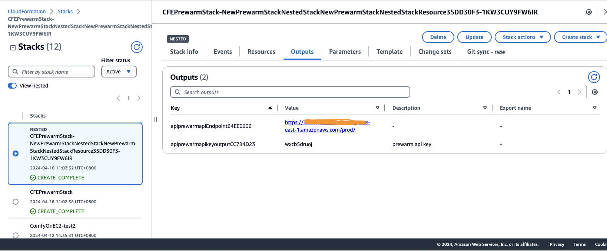
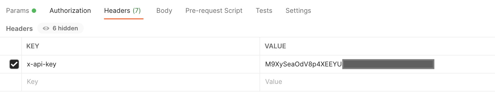

预热
什么是预热?
预热通过提前向CloudFront发送请求来加速内容交付。这在传递大文件时非常有用。预热有助于降低源站服务器的负载，因为相同的请求将命中CloudFront缓存，源站服务器接收的请求较少，因此，降低了源站服务器出问题的机率。
预热是如何工作的?
该解决方案部署了一个CloudFormation模板，将在您的AWS帐户中安装以下架构。所有云资源都将自动创建。部署后，您将获得两个REST API，一个用于触发预热操作，另一个用于获取预热状态。

CloudFormation模板提供以下组件和工作流：
- API Handler Lambda用来接收来自API Gateway的请求；对URL去重，写入一个csv文件，以request id命名上传到S3上；并按照传入的shutdown事件创建一个Eventbridge定时器；并按照参数要求启动ASG里面的EC2机器；把请求体存入DynamoDB的Request表中。
- DynamoDB的Request表开启了DynamoDB stream，Request表的stream会触发Get Size Lambda和Task Lambda。
- Get Size Lambda 会从S3中下载以request id命名的csv文件，轮询URL列表，执行curl命令，得到每个文件的大小并汇总文件大小，存入Request表中的total_size字段，单位是byte, 并把出问题的URL和成功的URL写回S3。
- Task Lambda会从DynamoDB stream中得到所有pop点和Cloudfront domain的信息，从S3中下载以request id 命名的csv文件，得到URL列表。轮询pop通过dig得到每个pop的IP列表，存入Request-Pop表中，然后轮训URL，根据参数确定是否需要删除cloudfront的缓存，并把每个URL和pop点匹配作为一个任务，发送到prewarm_task这个queue中去。
- ASG中的EC2机器会从prewarm_task这个queue中取得任务，执行curl命令进行文件下载，并且把下载结果存入Request-Task表中，包括文件的大小和下载的成功与否。其中EC2机器使用的是标准的Amazon Linux 2023的AMI，在启动的时候会去S3上下载agent代码并进行预热。
- Request-Task表开启了DynamoDB stream，这个stream会触发Aggregation Lambda，Aggregation Lambda会批量统计下载任务的文件大小，汇总之后更新Request表中的downloaded_size字段，得到累计下载大小。
- 定时器在预定的时间触发Shutdown Lambda，Shutdown Lambda 会直接停掉（terminate）掉ASG中的所有EC2机器，终端正在进行的预热。同时也会删掉prewarm_task这个queue里面所有的message，不管有没有完成。
通过Web控制台部署（推荐）
从Web控制台中部署扩展的步骤类似。有关更多信息，请参阅True Client IP.
通过CloudFormation部署
部署时间：约10分钟
部署概述
使用以下步骤在Amazon Web Service上部署此解决方案。
- 在您的Amazon Web Service帐户中启动CloudFormation模板。
- 查看模板参数，并在必要时进行调整。
部署步骤
-
登录到Amazon Web Services管理控制台，选择按钮以启动模板。您还可以选择直接下载模板 / 下载模板-使用已有vpc模版进行部署。

-
默认情况下，该模板将在您登录控制台后默认的区域启动，即美国东部（弗吉尼亚北部）区域。若需在指定的区域中启动该解决方案，请在控制台导航栏中的区域下拉列表中选择。
-
在参数部分，查看模板的参数，并根据需要进行修改。
-
对于选择直接部署的默认模版参数如下：
参数 默认值 说明 envName prod 选择的部署预热环境。 5. 对于选择使用现有vpc模版部署的参数如下： 参数 默认值 说明 envName prod 选择的部署预热环境。 vpc 无，必填 选择需要部署在的vpc subnet 无，必填 选择需要部署所在vpc的公有子网 sg 无，必填 选择需要使用的安全组 key 无，必填 选择安全密钥keypair vpce 无，选填 选择当需要部署为私有API时的endpoint 6. 选择下一步。 7. 在配置堆栈选项页面上，您可以为堆栈中的资源指定标签（键值对）并设置其他选项，然后选择下一步。 8. 在审核页面，查看并确认设置。确保选中确认模板将创建Amazon Identity and Access Management（IAM）资源的复选框。选择下一步。 9. 选择创建堆栈以部署堆栈。
您可以在Amazon CloudFormation控制台的状态列中查看堆栈的状态。正常情况下，大约15分钟内可以看到状态为CREATE_COMPLETE。
您还可以选择输出标签页查看堆栈资源的详细信息。
使用说明
在预热前，请在被预热的CloudFront分配的缓存行为中，将Viewer protocol policy设置为HTTP and HTTPS.
通过Postman触发预热
-
当本方案部署完成后，打开CloudFormation堆栈的输出标签页，可以看到如下信息： 
- prewarmapikeyoutput: API密钥arn。您可在API Gateway控制台的API密钥界面中找到此API key，点击显示按钮，获取密钥。请求预热API时需要使用此密钥进行鉴权，作为x-api-key的值。
- prewarmapiEndpoint: 预热API的URL即为在此后面加上prewarm关键字。 例如：若PrewarmApiEndpoint是https://123456789.execute-api.us-east-1.amazonaws.com/prod/，则预热API为POST方式调用 https://123456789.execute-api.us-east-1.amazonaws.com/prod/prewarm 例如：若PrewarmStatusApiEndpoint是https://test.execute-api.us-east-1.amazonaws.com/prod/，则获取预热进度API为GET方式调用 https://test.execute-api.us-east-1.amazonaws.com/prod/prewarm
- 打开可以发送HTTP请求的工具，例如Postman。
- 按照预热API格式发送预热请求（更多信息请见API参考指南），并在header中新建键值对：key为x-api-key，value为API key。


-
预热API会返回requestID，至此您成功触发了预热，下面可以通过查询预热进度 API获取预热状态。
- 按照获取预热状态API的格式发送请求，并在url参数中带上requestId，在header中添加x-api-key，在响应中可看到最新的预热状态。(请注意检查是否请求header中默认带有Accept-Encoding，并且值为"gzip, deflate, br"，如果没有注意添加下)

- 可以在预热过程中变更预热的instance数量，以便动态调整整体预热进展

- 变更预热的instance数量后可以查看系统当前的instance数量

- 预热结束后可以查看预热结果报告

通过Curl触发预热
触发预热
脚本内容
prewarmlist.json
{
"url_list": [
"https://www.example.com/index.html",
"https://www.example.com/css/bootstrap-icons.css"
],
"cf_domain": "www.example.com",
"target_type":"pop",
"countries": [
],
"regions": [
],
"pops": [
"ATL56-C1",
"SIN2-C1",
"DFW55-C3"
],
"timeout": 5,
"header": [
],
"instance_count": 1,
"need_invalidate": false
}
注意
字段 "target_type" 是可选字段，如果不指定，默认是pop 也可以选择country和region 如果选择了某个值pop country region中的某一个 下面对应的pops countries regions需要填写对应需要预热的值，不填系统默认选择可预热节点预热. need_invalidate字段可选，表示是否开启清除cloudfront的缓存 默认不开启
prewarm.sh
prewarmuri="https://123456789.execute-api.us-east-1.amazonaws.com/prod/prewarm"
curl --header 'x-api-key: KEY12345678900Tg9P' -XPOST -d @prewarmlist.json $prewarmuri
执行脚本
sh prewarm.sh
执行结果示例
{
"status": "Success",
"error_message": "",
"error_urls": [],
"request_id": "e059b77b-e427-4489-a50b-4d8c652f114c",
"timestamp": "2024-04-16 03:12:21.046535",
"timeout_at": "2024-04-16 03:17:21.046535"
}
获取预热进度
脚本内容
prewarmstatus.sh
#!/bin/bash
statusurl="https://123456789.execute-api.us-east-1.amazonaws.com/prod/prewarm?req_id=e1efca9a-8d92-4058-a1e9-002fd423f6e5“
curl --header 'x-api-key: KEY123456789Tg9P' $statusurl
执行脚本
sh prewarmstatus.sh
执行结果示例
{
"request_id": "684153cc-efab-4a53-9409-357fddc2e2bd",
"download_size": 137368,
"total_size": 206052,
"percentage_complete": 66,
"available_task_count": 0,
"in_progress_task_count": 0,
"download_count": 6,
"total_count": 6,
"created_at": "2024-04-16 03:10:21.405303",
"last_update_time": "2024-04-16 03:11:53.531414",
"timestamp": "2024-04-16 03:15:09.499889",
"status": "FINISHED"
}
管理instance
修改instance数量
脚本内容
instance.json
{
"req_id": "684153cc-efab-4a53-9409-357fddc2e2bd",
"DesiredCapacity": 1
// "force_stop": false
}
注意
字段 "force_stop" 是可选字段，如果不指定，默认是false 表示是否强制关停预热的机器
instance.sh
instanceuri="https://123456789.execute-api.us-east-1.amazonaws.com/prod/instances"
curl --header 'x-api-key: KEY12345678900Tg9P' -XPOST -d @instance.json $instanceuri
执行脚本
sh instance.sh
执行结果示例
{
"status": "success",
"timestamp": "2024-04-16 03:54:40.366685",
"message": "Auto Scaling Group prewarm_asg_prod updated to Desired Capacity: 1"
}
获取instance数量
脚本内容
prewarminstance.sh
#!/bin/bash
instancesurl="https://123456789.execute-api.us-east-1.amazonaws.com/prod/instances“
curl --header 'x-api-key: KEY123456789Tg9P' $instancesurl
执行脚本
sh prewarminstance.sh
执行结果示例
{
"status": "success",
"timestamp": "2024-04-16 03:56:39.210951",
"message": "query success",
"desiredcapacity": 1
}
获取预热报告
脚本内容
prewarmreport.sh
#!/bin/bash
reporturl="https://123456789.execute-api.us-east-1.amazonaws.com/prod/summary?req_id=684153cc-efab-4a53-9409-357fddc2e2bd“
curl --header 'x-api-key: KEY123456789Tg9P' $reporturl
执行脚本
sh prewarmreport.sh
执行结果示例
{
"request_id": "684153cc-efab-4a53-9409-357fddc2e2bd",
"failure_pops": [],
"failure_urls": [
""
],
"failure_pop_urls_report": "http://reporturl",
"timestamp": "2024-04-16 03:12:54.605891",
"created_at": "2024-04-16 03:10:21.405303",
"last_update_time": "2024-04-16 03:11:53.531414",
"status": "FINISHED"
}
问题调试
预热方案会自动启动EC2 Spot实例，并在EC2上执行脚本进行预热，预热脚本的位置为/home/ec2-user/agent/agent.py，当预热执行完毕后会自动删除这些EC2实例。